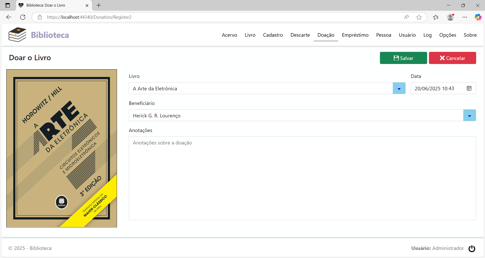
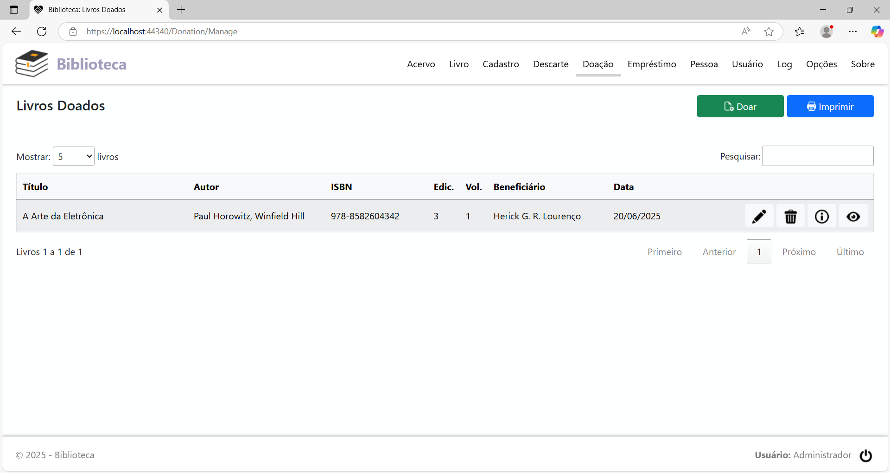
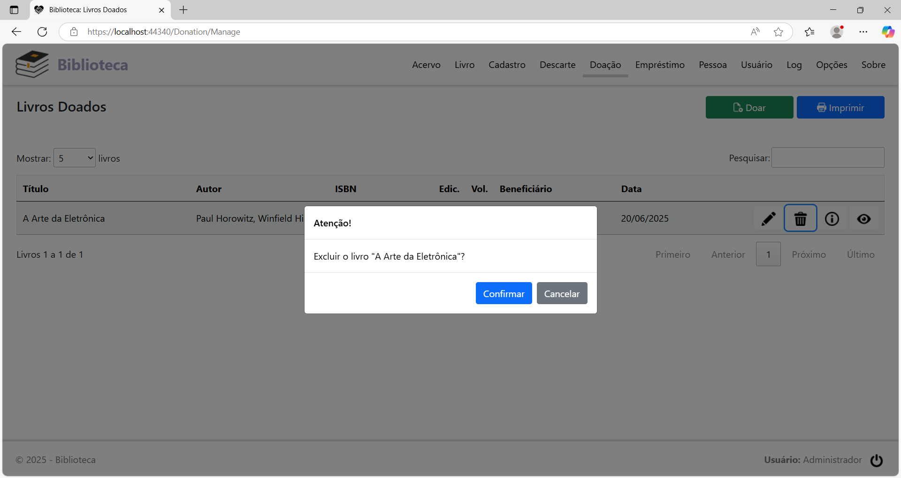

Menu Doação
Clicando na opção de menu Doação, será exibida a página Livros Doados. Se não foi doado nenhum livro ainda, a página terá o seguinte aspecto:
Doar um livro
Para registrar a doação de um livro, clique no botão Doar. Será exibida a página Doar o Livro:

Preencha os campos:
Livro: Livro que foi doado.
Data: Data em que o livro foi doado.
Beneficiário: Pessoa para quem o livro foi doado.
Motivo: Anotações sobre a doação do livro.
Preenchidos os campos, clique no botão Salvar.
Após o registro, a página terá este aspecto:

Cada linha na tabela,
representando um livro doado, tem 4 botões, localizados à direita
da coluna Data, com
as seguintes funções, nesta ordem:
Editar o livro doado: Alterar o registro de doação do livro.
Excluir o livro doado: Excluir o registro de doação do livro.
Informações do livro doado: Visualizar o motivo da doação do livro.
Detalhes do livro doado: Visualizar os detalhes do livro doado na página Detalhes do Livro.
Alterar o registro de doação de um livro
Localize na lista o registro de doação que será alterado e clique no botão Editar o livro doado. Será exibida a página Editar Doação, listando todos os campos do mesmo.
Altere o(s) campo(s) que está(ão) incorreto(s) e clique no botão Salvar.
Excluir o registro de doação de um livro
Localize na lista o registro de doação que será excluído e clique no botão Excluir o livro doado. Será exibido o diálogo para a confirmação:

Clique no botão Confirmar para concluir.
Gerar o relatório Livros Doados
Para imprimir o relatório dos livros que foram doados, clique no botão Imprimir, no cabeçalho da página.
O formato do relatório pode ser PDF ou HTML, dependendo do que foi configurado na página Opções.